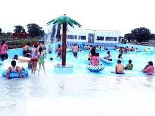
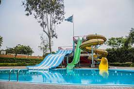

Only water park in Jabalpur, this is a fun water park for children and teenagers.
The fees are around Rs.100 per person and the timings are around midday to 5pm.
Timings: 10:00 AM - 6:00 PM (All Days)
Entry Fee: INR 360 per adult; INR 270 per child
Sea World Water Park is the only water park in JABALPUR since April 25, 2001 we provide you delicious food with pool side, open and fully A.C restaurant.
A complete arrangement for Marriage, Business conferences, Birthdays and Kitty Parties
Rooms available for Marriage purpose.
For booking contact-9407339507

An upcoming water park in Jabalpur, Ramuji Water Park promises to provide a thrill and fun-loving day for people of all ages who visit this water park.
It is spread over 21 acres of land and has 26 fun rides planned for the visitors - thrill rides, family rides, kid rides - along with a food court serving delicious food.
Timings: 10: 00 AM - 7:00 PM (Sunday closed)